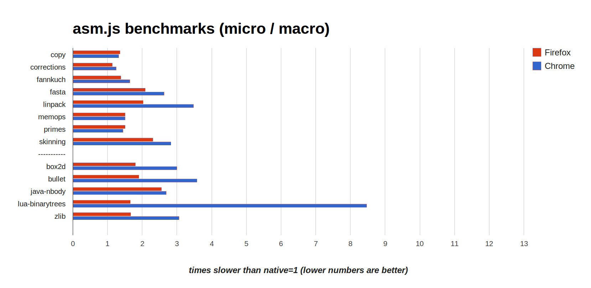
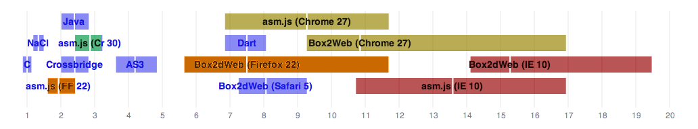
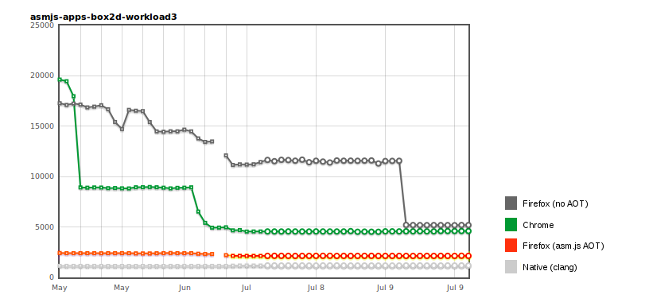
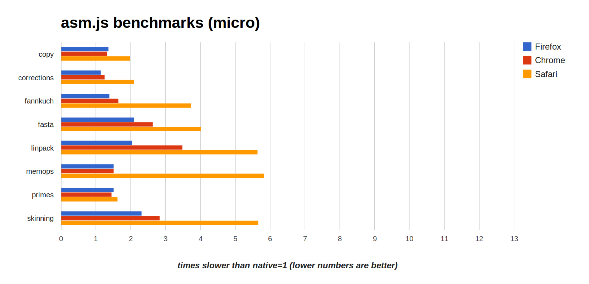

Native Speed on the Web: JavaScript and asm.js
Alon Zakai (Mozilla logo)
The Web

Biggest open and standards-based platform
Best way to reach users
html5 logo, w3c, etc.How fast is it?
Speed on the Web
Speed is determined by many things
DOM, graphics, JavaScript
This talk is mainly about JavaScript
How fast is JavaScript?
The Epic Citadel demo is one way to measure that
Over 1 million lines of C++ compiled to JavaScript using Emscripten
OpenGL renderer, compiled to use WebGL
Epic Citadel: Progress
You may have seen the demo when it launched, 6 months ago (March 2013)
The demo itself hasn't changed much since - but browsers have:
Back then it only ran in Firefox, today it also runs in Chrome
Back then it took 20 seconds to start up, today it takes 10 seconds
Back then it ran at 40fps, today both Firefox and Chrome run at 60fps
JavaScript Naysaying / Time
"JS is 100x slower than native code" (and it was, when it was just interpreted)
"JS is 10x slower than native code" (and it was, when it was first JIT compiled)
Today JS engines have sophisticated type-specializing JITs and are much faster, and critics say "any amount of slowdown compared to native is bad" (and that's true too)
Current Performance
{kind=link}
Emscripten benchmark suite (VMs and Emscripten from Sep 6 2013, run on 64-bit linux)
asm.js
Those numbers are on asm.js, a subset of JavaScript that is easy to optimize
Benchmarks we just saw show both Firefox and Chrome run between 1-3 times slower than native
function asmCode(global, env, buffer) {
'use asm';
var HEAP = new global.Uint8Array(buffer);
function fib_like(x) {
x = x|0;
if ((x >>> 0) < 2) return HEAP[x]|0;
return ((fib_like((x-2)|0)|0) + (fib_like((x-1)|0)|0))|0;
}
return fib_like;
}HEAP cannot be replaced
|0 trick ensures 32-bit ints
asm.js - Background
Began as a research project at Mozilla
Every compiler (CoffeeScript, Google Web Toolkit, etc.) generates a particular pattern of JS
Emscripten and Mandreel compiled C++ to JS into a particular pattern as well
asm.js is a formal definition of that pattern, with some improvements
asm.js comparison
asm.js is faster than "typical" JavaScript on Internet Explorer, Chrome and Firefox
Box2D results
source: @jgw, Box2D Addendum; lower is better
Box2dWeb: Port of Box2D using "typical" JS
asm.js: Port of Box2D using asm.js
Note also that asm.js on Firefox and Chrome is comparable to Java
Box2D: Progress and AOT
{kind=link}
source: arewefastyet.com; x axis is time, y axis is milliseconds (lower is better)
Red/orange is Ahead Of Time (AOT) compilation (using the asm.js type system)
Just In Time (JIT) compilers catching up fast
AOT is not necessary, but makes optimization easier and prevents recompilation overhead
No point in time where asm.js is "supported" by a browser, asm.js is just a subset of JS that is being optimized like any other
But I use Safari or IE..?
I've been talking about Firefox and Chrome, but Safari and Internet Explorer are important too of course!
Some Safari Numbers
{kind=link}
Very close on some, farther on others
Not standing still: Experimenting with using LLVM as a JIT
Internet Explorer
IE11, currently in pre-release builds, looks promising
Too early to benchmark, but I've seen it beat Chrome and Firefox in some JS tests
Supports WebGL!
Safari and IE
All browsers, including those, support JavaScript and optimize it
Only question is how fast and how soon
Big Picture
Overall JS speed is good and getting better
Half the speed of native in many cases
What are the remaining issues?
1. 32-bit Floats
JavaScript numbers are 64-bit doubles
Often take more CPU cycles to compute
Require more memory bandwidth
32-bit Floats
Sometimes possible to do 32-bit math on 64-bit values as an optimization
var floats = new Float32Array(calc());
floats[0] = floats[1] + floats[2];
floats[1] = floats[0] + floats[2];
floats[2] = floats[1] + floats[2];
Mathematically provable that those additions can be 32-bit
So no reason JS engines cannot do this right now, and Firefox is working on it
32-bit Floats
More general code fails though
var floats = new Float32Array(calc());
floats[0] = floats[1] + floats[2] + 1;
floats[1] = floats[0] + floats[2] + 1;
floats[2] = floats[1] + floats[2] + 1;
+1 prevents the optimization
But ES6 (proposal for the next version of JS) includes Math.fround, which rounds to 32-bit precision
var floats = new Float32Array(calc());
floats[0] = Math.fround(floats[1] + floats[2]) + 1;
floats[1] = Math.fround(floats[0] + floats[2]) + 1;
floats[2] = Math.fround(floats[1] + floats[2]) + 1;
Now optimizable!
Preliminary tests on Firefox show 10-20% speedups on relevant code
2. SIMD
CPUs have hardware support for SSE etc. which can make certain types of code much faster
C++ has various ways to support it, and some VMs do as well: Mono, Dart
John McCutchan from Google wrote a proposal for SIMD in JS
SIMD
var x = new float32x4(1, 2, 3.14159, 22.5);
var y = new float32x4(0, 0, 1, 0);
var z = x.add(y);
Immutable 128-bit values
Relatively straightforward design, based on John's experience doing the same in Dart
Potentially big (e.g. 300% in some cases) speedups on certain types of code
Collaboration is ongoing with Mozilla, Intel and others
3. Threads
Web workers allow multiple CPU cores to be utilized
Web workers can transfer typed arrays, avoiding copies
But they can't read and write to the same data at once
Good for preventing data races, but bad for some types of projects, for example modern game engines are heavily multithreaded
Threads
Various proposals exist for allowing more parallel computation on data, but no clear direction yet
Would require all vendors to agree and standardize something new and complex
Part of the challenge is figuring out how it fits in with the rest of the web, which does not currently have data races at all
For example it would be technically simple to allow workers access to a shared typed array, but many feel this goes against the JS programming model
Pre-Summary
JS is getting close to native speed, even if some hurdles remain
But important to remember that the web is better than other platforms in many ways
Size and reach
Ability to combine content in interesting ways: [final demo]
What you just saw
BananaBread, a port of the Cube 2/Sauerbraten First Person Shooter (FPS) to JS+WebGL
Boon, a fully open source FPS based on the Doom source code (PrBoom) + free art assets (Freedoom)
Boon runs in a web worker, input events are proxied to it, output of software renderer is sent back
We push those pixels to a WebGL texture
Less than 100 lines of code to integrate the two
Easily 60fps on an average laptop with an Intel GPU and Linux - not a hot rod!
Summary
TODO
That's it! Questions?